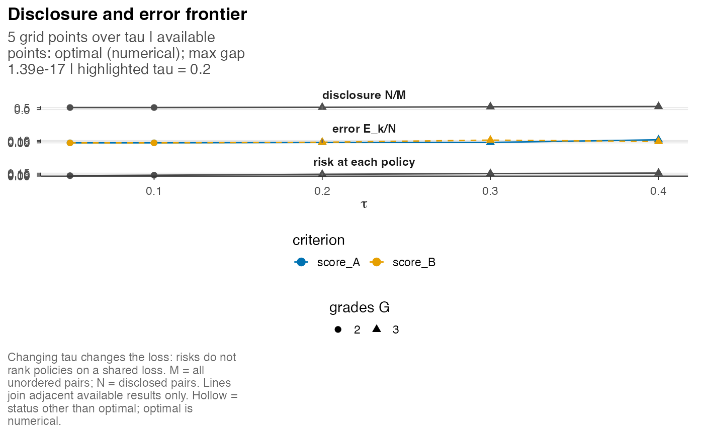

Plot Disclosure, Error, and Risk Across Settings
postrank_plot_frontier.Rdpostrank_plot_frontier() plots stored disclosure rates (N / M),
criterion wrong-direction error rates (E_k / N), and primary risk across a
grid of withholding costs tau or error budgets q_k from
postrank_frontier(), without re-solving the grid.
Usage
postrank_plot_frontier(
x,
panels = c("disclosure", "error", "risk"),
highlight = NULL,
mark_uncertified = TRUE,
...
)Arguments
- x
A
postrank_frontierobject.- panels
Non-empty character vector chosen from
c("disclosure", "error", "risk")(all three by default). Selected panels always appear in that top-to-bottom order.- highlight
Optional numeric value on the horizontal axis (
tauor the varied error budgetq_value) marked with a vertical dashed line.- mark_uncertified
Logical scalar (
TRUEby default). WhenTRUE, grid points whose solverstatusis not"optimal"are drawn as hollow circles; whenFALSE, all available points use the standard shape scale. Here"optimal"records the solver's numerical termination status, which is not a mathematical certificate.- ...
Unused; unnamed extra arguments are ignored.
Value
A ggplot object. When no grid point has a finite value for the
requested panels (for example, no checked grading or N = 0 when only
"error" is shown), returns an empty status ggplot stating why.
Details
M = choose(n, 2) is the number of unordered entity pairs and N is the
number of disclosed (ordered) pairs. Point shapes indicate the number of
distinct grades G (up to 18 distinct G values; above 18, solid circles
are used and noted in the subtitle). Color and line type distinguish criteria
in the "error" panel. Grid rows without a checked grading are listed in the
subtitle and omitted from the plot; connecting lines stop at missing rows and
at N = 0 where E_k / N is undefined, so non-adjacent available points are
never joined across a gap. Vertical axes start at zero.
Changing tau changes the loss function itself, so risk values at different
tau settings do not compare rules under one shared loss. Changing an error
budget q_k changes the feasible set of gradings; when an error-budget grid
spans multiple tau values, each tau receives its own facet column rather
than a single connecting line.
Under exact optimization with all other settings fixed, disclosure N / M is
nondecreasing in tau, although the disclosed pair sets need not be nested.
Numerical solver statuses and gaps do not guarantee exact monotonicity of the
returned gradings.
Examples
frontier <- postrank_example("tutorial_frontier")
postrank_plot_frontier(frontier, highlight = 0.2)

Open full-size figure